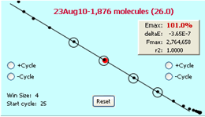
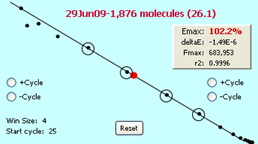
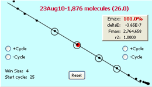
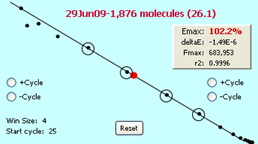

AB7500 fast ramping

MX5000P

Originating from recognition that like for other molecular technologies, lambda gDNA could be used as a universal standard for qPCR, lambda-based assays provided an essential foundation for development and testing of LRE. This included investigations into the impact of enzyme formulation, SYBR Green I concentration, reaction volume, amplicon size and GC content, and cycling regime1,2.
The general utility of lambda-based performance benchmarks became even more evident during broad implementation of LRE that included, for example, performance testing of a new instrument or enzyme formulation, in addition to becoming a central part of the quality control protocols provided by the LRE Analyzer. As discussed in the optical precision overview, a prominent example are differences in optical performance as reflected by scattering of the LRE plot, which for the examples below were generated with 100 pg lambda gDNA + CAL1, amplified with QuantiTect using an identical cycling regime (95 oC 10sec, 65 oC 120 sec):
AB7500 normal ramping

AB7500 fast ramping

MX5000P
Particularly for cycles within the lower region of the amplification plots, it is clear that the Applied Biosystems 7500 with normal ramping produces the highest optical precision, as reflected by generating EC values that best conform to the LRE line.
Other examples include monitoring assay performance and identification of anomalies produced by the enzyme formulation such as profile arcing.
It is thus recommended that a standard calibration reaction set consisting of 100 fg lambda gDNA and CAL1 be included during implementation of LRE, in order to assess the general performance of your instrument and reaction setup.
1. Rutledge RG, Stewart D (2008) A kinetic-based sigmoidal model for the polymerase chain reaction and its application to high-capacity absolute quantitative real-time PCR. BMC Biotechnol 8: 47
2. Rutledge RG, Stewart D (2010) Assessing the performance capabilities of LRE-based assays for absolute quantitative real-time PCR. PLoS ONE 5: e9731.